Your first objects
SweeperCAD works differently from most 3D programs, and that can feel unusual at first. Once it clicks, it is simple: everything is a profile (a cross-section) pushed along a spine (a path), and a scale graph says how big the profile is along the way. These three short tutorials take you there step by step.
💡 There is also a short guided tour inside the app (Help ▸ First steps tour) that walks you through the same first steps.
1 · Finding your way
Before you make anything, a quick look round. Nothing here can break - try everything.
1The four parts of the window
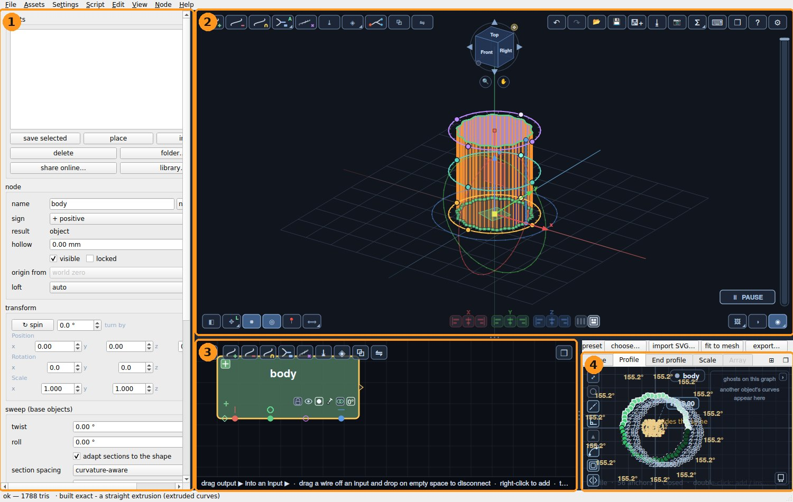
- The panel (left) shows the settings of whatever is selected: its name, whether it adds or cuts, where it is (position, rotation, scale), and its twist.
- The 3D view shows your model, with icons in its four corners.
- The node editor shows every object as a node, and how they are combined. Click a node to select that object.
- The graphs shape the selected object: Spine, Profile, End profile and Scale, in tabs.
Selecting something anywhere selects it everywhere: click an object in the 3D view and its node lights up, its settings fill the panel and its graphs open below.
2The icons in the corners of the 3D view
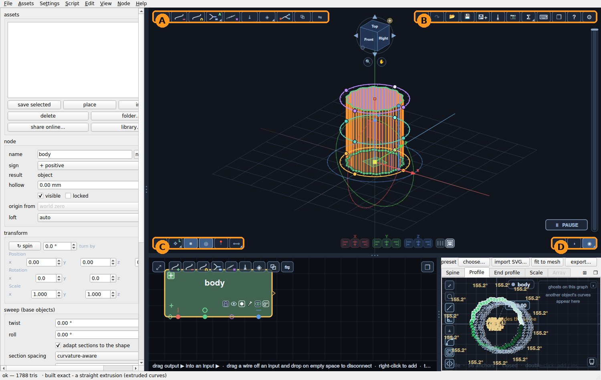
- A, top left - making things: + a new object that adds, − one that cuts, = combine, and more. Tutorials 2 and 3 use these.
- B, top right - the file: undo and redo, open, save, export, a picture of the model, the help (?) and the settings (⚙).
- C, bottom left - handling the model: how you move, turn and scale the selected object, and measuring.
- D, bottom right - how it is shown: the grid, the axes, perspective or flat, light or dark.
Hover over any icon and it tells you what it does. An icon with a small ◢ in its corner holds a few more: click the corner to see them.
3Moving round your model
- Drag in the 3D view to turn round the model.
- Scroll to zoom in and out.
- Middle-drag to slide the view sideways.
- Press F to fit the whole model in view, and O to switch between perspective and a flat (orthographic) view.
4The navigator
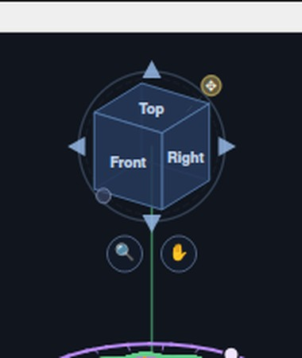
- Double-click a face - Top, Front, Right... - to look straight at the model from that side. The view glides there, so you keep your bearings.
- The four arrows turn the view a quarter turn that way - handy to reach the side you cannot see.
- Drag the cube to turn the view, just like dragging in the 3D view.
- The small dot at its lower left puts the view back to where it started.
- Under it, the magnifier: click it to zoom to what is selected, double-click it to fit everything, drag it left and right to zoom finely. The hand: drag it to slide the view, double-click it to centre on the model.
- The ✥ handle at its top right moves the navigator itself, if it is in your way.
5Make room
Drag the lines between the parts of the window to make any of them bigger. The ⊞ button beside the graph tabs shows all the graphs side by side, and ❐ puts the graphs (or the nodes, or the 3D view) in a window of their own - for a second screen. Close that window and it goes back where it was.
You are ready to make something.
2 · A twisted vase
You will make one object and shape it with its three graphs. Nothing to combine, nothing to place.
1The object you start with
SweeperCAD opens with one object already there: a small square bar. Below the 3D view are its graphs, in tabs: Spine, Profile, End profile and Scale. Every change you make in a graph shows in the 3D view straight away.
In the 3D view, drag to turn it round, scroll to zoom and middle-drag to slide it.
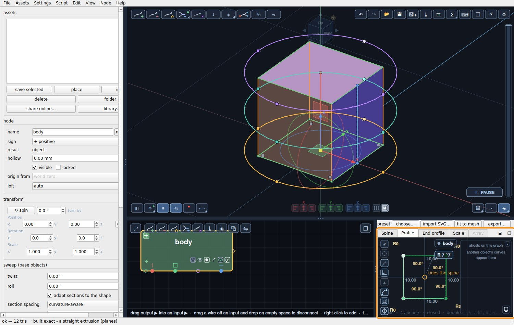
2The profile: give it a fluted cross-section
Click the Profile tab. Above the graph, click preset and choose fluted. Set flutes to 14, diameter to 50 mm and depth to 1.5 mm, and click OK.
The profile is what you would see if you cut the object through: now a ribbed circle.
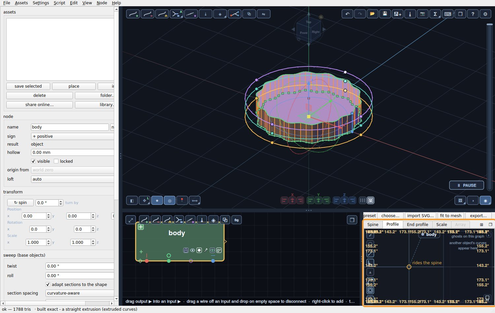
3The spine: make it taller
Click the Spine tab. The spine is a straight line with a point at each end. Click the top point, type 90 and press Enter: the line becomes 90 mm long, and the object 90 mm tall.
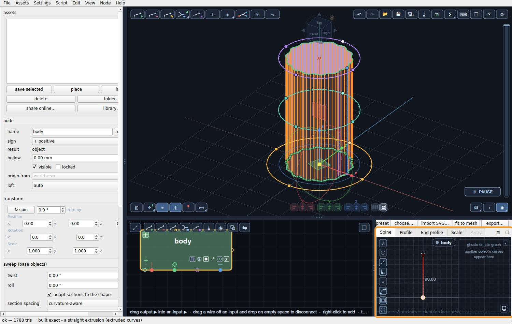
4The scale graph: give it a vase shape
Click the Scale tab. This graph is the object's silhouette: left is the bottom of the spine, right is the top, and the height of the line is how big the profile is there.
Double-click on the top line to add a point, about a third of the way along, and drag it up for the belly. Double-click again further right and drag that point down for the neck. Drag the last point up a little for the lip. Watch the vase take shape as you drag.
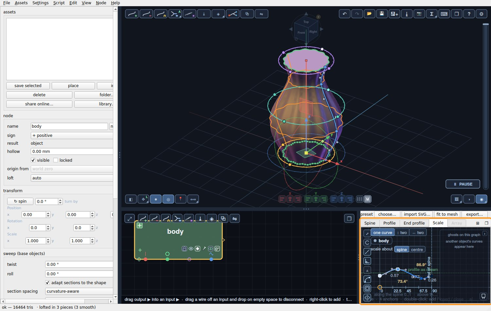
5The twist
In the panel on the left, under sweep, type 90 into twist. The profile now turns a quarter turn from bottom to top, and the flutes spiral up the vase.
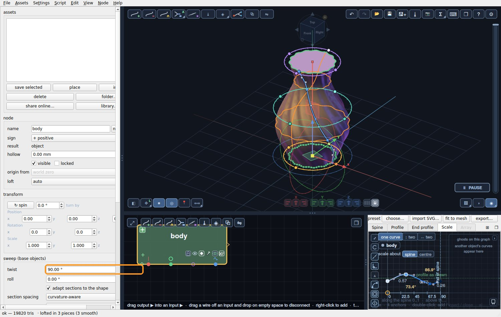
6Save it and export it
Save your work with the save icon at the top right. To print it, click the export icon (⭳) and choose STL or 3MF.
💡 The vase is solid. To print it as a real vase, use your slicer's vase mode (also called spiralize outer contour): it prints only the outer wall, in one go, and leaves the top open.
That is the whole idea. Every other shape is made the same way: a profile, a spine, a scale, and sometimes a twist.
3 · A mug: combining objects
One object rarely makes a whole part. In SweeperCAD you combine objects: a + object adds material, a − object cuts it away. You will make a cup, add a handle, and then cut out the inside.
1The cup
Start a new file (File ▸ New). Click the Profile tab, then preset ▸ circle. On the graph, the circle shows its radius as an R label: click it, type 30 and press Enter.
Click the Spine tab, click the top point, type 70 and press Enter. You have a solid cylinder, 60 mm across and 70 mm tall.
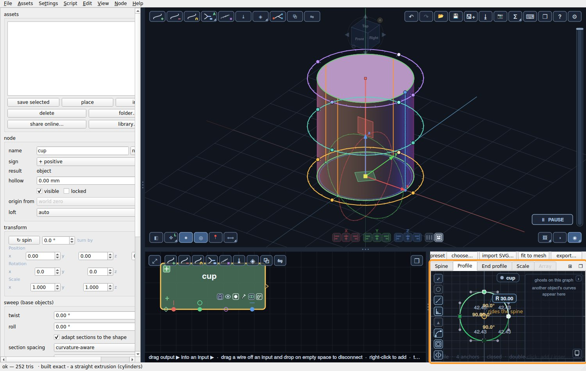
2Add a handle
With the cup selected, click + at the top left of the 3D view and click beside the cup. A new object appears, and because the cup was selected it joins the cup by itself: in the node editor the two now feed a combine.
Make the handle a ring: Profile ▸ preset ▸ circle, R 4 (that is the thickness of the handle). Spine ▸ preset ▸ circle (a ring): the spine itself is now a circle, so the profile travels round it. Set its position to x 71, y 0, z 35, and the ring sits against the side of the cup.
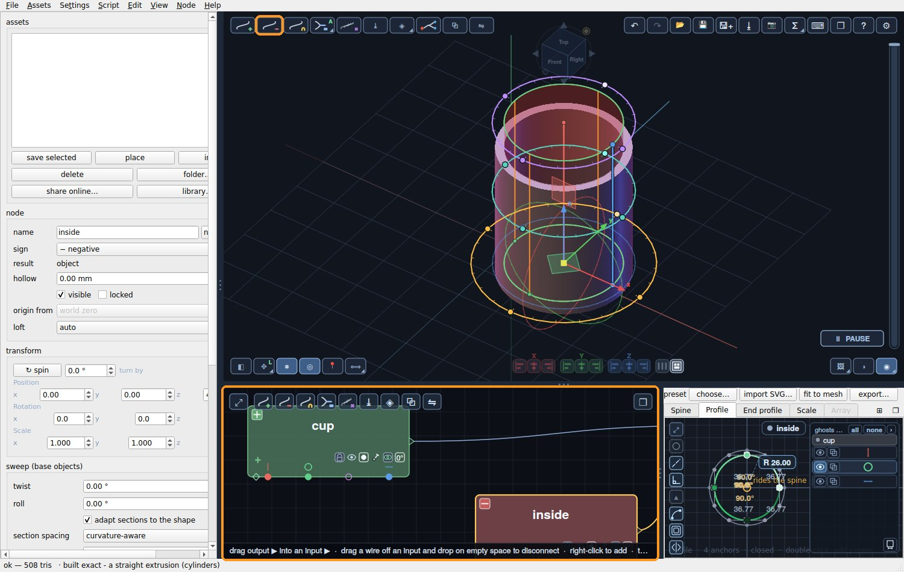
3Cut out the inside - last
In the node editor, click the combine (the cup with its handle), so the cut works on both. Click − at the top left of the 3D view, then click on the top of the cup. A negative object joins: a red node in the node editor.
Shape the cut like the cup: Profile ▸ preset ▸ circle, R 26. Spine: top point, 80. Then in the left panel set its position to x 0, y 0, z 4. That leaves a 4 mm floor and 4 mm walls, and the cut runs out through the top.
💡 Why the handle first? A cut removes everything that comes before it. Cut last, and it also trims any bit of the handle that pokes into the cup - the inside stays clean.
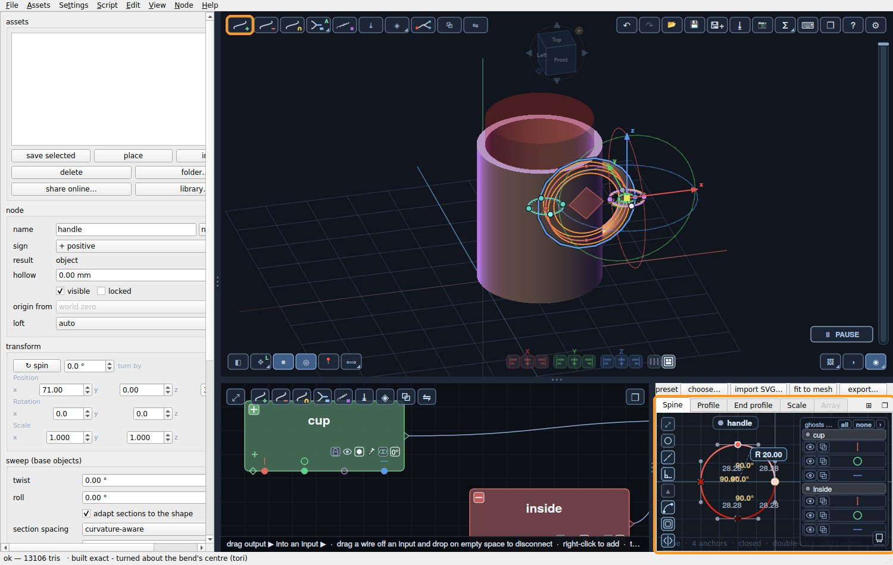
4Round the seam
Click the combine of the cup and the handle in the node editor. In the left panel, under seam blend, set mode to fillet and the radius to 2 mm. The edge where the handle meets the cup is rounded, as if it were cast in one piece.
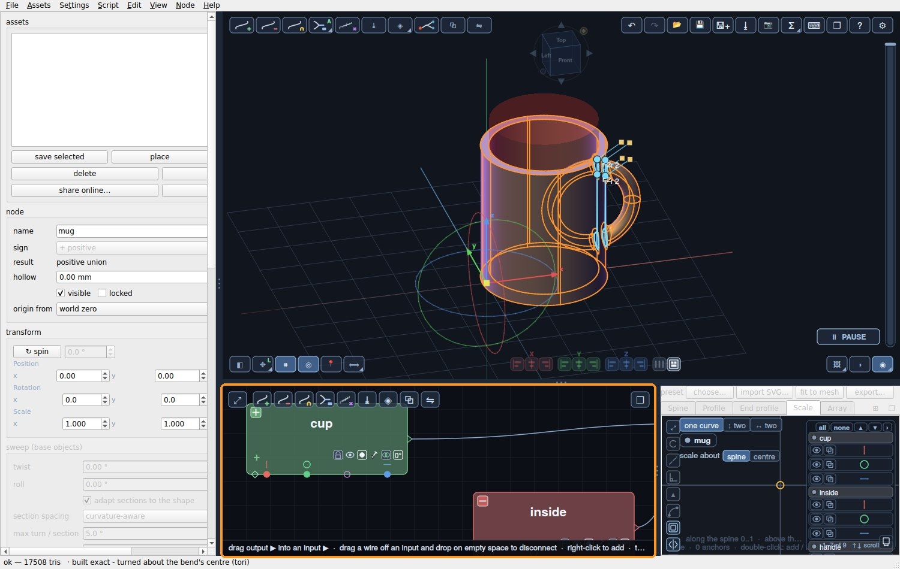
That is combining: + adds, − cuts, and whatever is selected when you place a new object is what it joins. Change any graph of any object later, and the mug follows.
4 · How the library models are built
Six finished models, each taken apart step by step: which sweep makes which part, and how they are combined. Every one is in the library to download, open and pull on.
 A teapotnine sweeps, a lid that lifts off
A teapotnine sweeps, a lid that lifts off
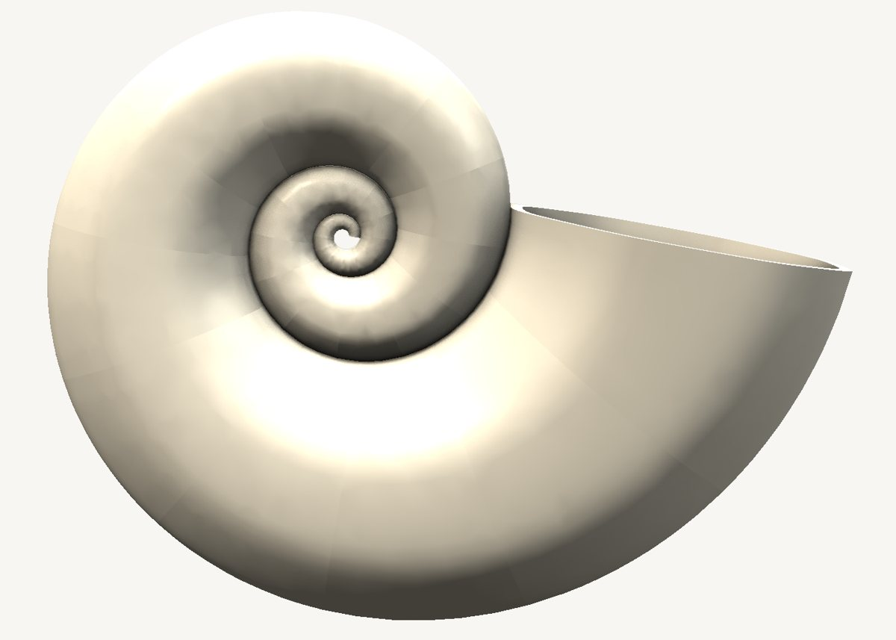
A nautilus shellone sweep on a spiral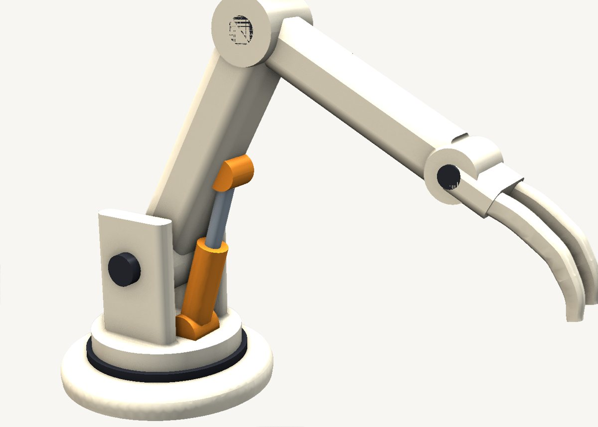
A robot armtwenty sweeps, posable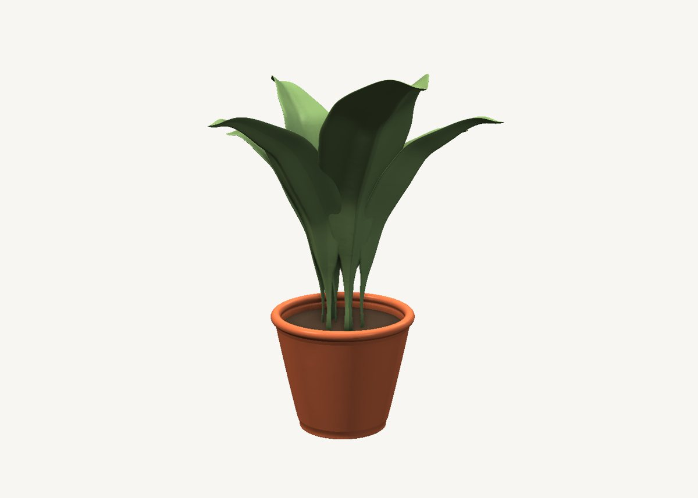
A potted plantevery leaf one sweep A cute robotadd, subtract and keep
A cute robotadd, subtract and keep
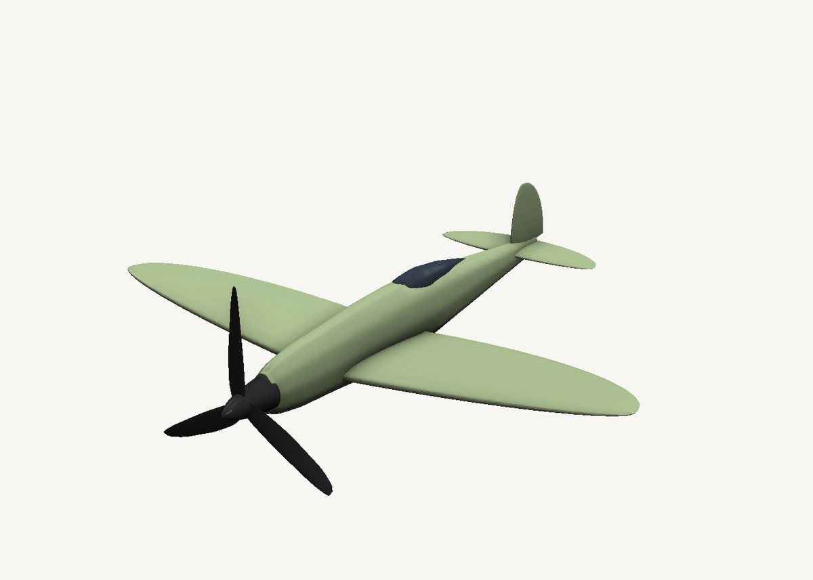
An elliptical-wing aircraftthe ellipse is the scale graphWhere next
- The cheat sheet: every icon, mouse gesture and key on one printable page.
- F1 in the app opens the full help.
- The user manual, chapters 1 and 2, explains the graphs in more depth.
- The short videos on the home page show what else it can do.
- Stuck? Use the contact form on the home page - questions help make these tutorials better.